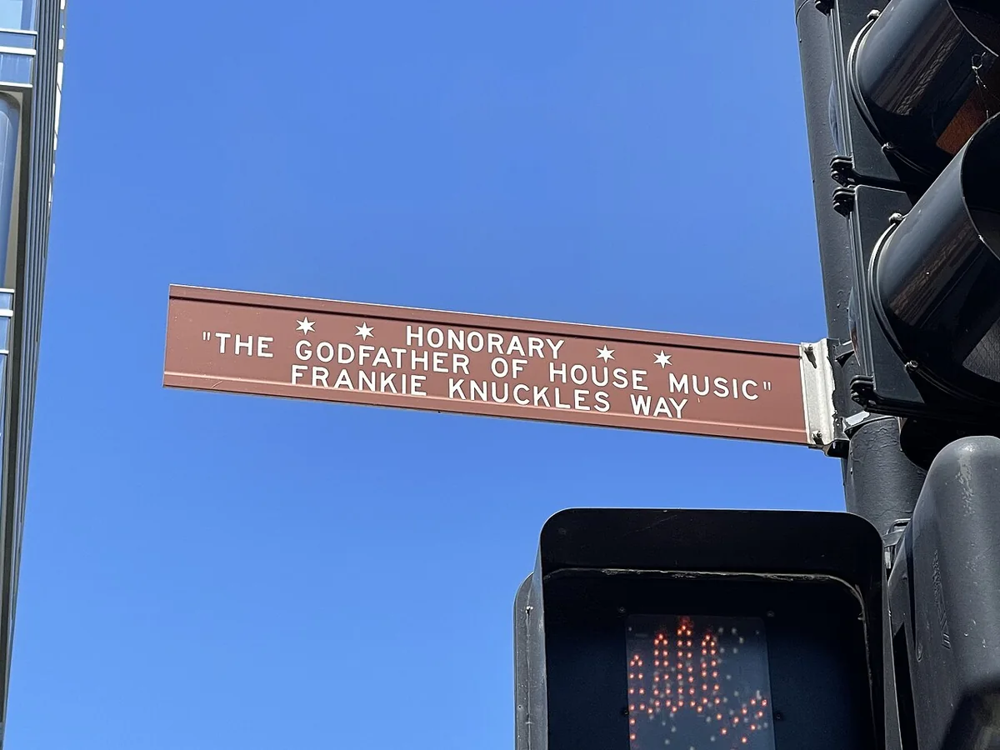
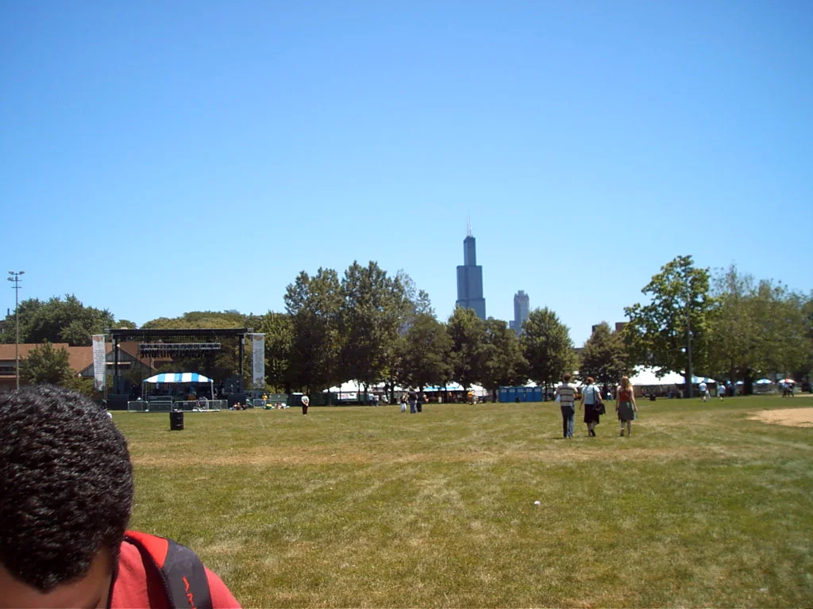

Chicago festival guide
ARC Music Festival: Chicago House, Techno and Union Park
A compact Labor Day festival where Chicago house history, Detroit techno and the international club circuit share Union Park.
Chicago artists share the bill.
ARC is easier to understand when Chicago is treated as part of the programme. A set by Derrick Carter, DJ Heather or Green Velvet carries a different weight here than it would on a generic touring bill. The festival also books European house and techno at headline scale, so local history and the current international circuit share the same weekend.
ARC Music Festival 2027.
ARC has opened registration for 2027 updates, but it has not announced the 2027 dates, lineup, stage map or ticket release. The festival has taken place in Union Park over Labor Day weekend since its first edition. That pattern can guide tentative planning until the official announcement arrives.
| Fact | Current information |
|---|---|
| 2027 dates | Not yet announced |
| Location | Union Park, Chicago |
| Music | House and techno |
| Age | 18 plus |
| 2027 lineup | Not yet announced |
| Official updates | Registration is open on the ARC website |
ARC Music Festival tickets for 2027 are therefore not yet on general sale. Registration is only a route to official updates, not a ticket or a guarantee of dates.
The 2026 edition ran from 4 to 7 September. It was the first four-day ARC, and the park layout changed after work inside Union Park. Those details describe 2026 and should not be carried into 2027 until the organiser publishes a new map and schedule.
What music ARC plays.
House and techno define ARC. The bookings move from Chicago house and Detroit techno into tech house, melodic material, harder contemporary techno and large back-to-back sets. The festival has repeatedly billed local originators beside newer international names rather than placing Chicago history in a token side slot.
The two sets above are Boys Noize b2b VTSS, filmed for Mixmag Lab at ARC, and Nicole Moudaber’s 2025 set. Both come from the techno side of the bill.
Stage identities help separate those strands, although names and hosts can change. The Grid has usually carried the largest productions. Expansions has leaned toward house and techno in a tree-lined part of the park, while Area 909 has given Chicago and Detroit material a smaller, more direct setting. Previous editions also included an elrow-hosted environment, but the 2026 site changes mean an older stage list may be out of date.
Why Chicago changes the festival.
House music developed through Chicago clubs, DJs, dancers and records during the early 1980s. ARC uses that history as a programming principle. Artists such as DJ Pierre, Derrick Carter, Gene Farris, DJ Heather and Green Velvet are billed beside global headliners, not in a side slot.

The connection continues beyond the park. ARC After Dark sends festival artists into Chicago venues after Union Park closes, extending the weekend through rooms with their own audiences and histories. The afterparties require separate tickets and sell on their own timetable.
How ARC started.
ARC was conceived in 2020 by Auris Presents partners Nick Karounos, Stuart Hackley and John Curley. The first edition took place in Union Park on 4 and 5 September 2021. Its stated idea was to bring the global house circuit to the city where the music began, while giving Chicago artists comparable billing.
The festival expanded after that two-day debut. By 2025 it had reached its fifth edition, and in 2026 it ran across four days. Stage hosts, operating days and park geometry have already changed between editions.
Union Park and the stages.
Union Park is a compact public park west of Chicago's downtown core. The setting makes movement between stages relatively quick, but it also places several sound systems close together. A position near the centre of a stage area is often better than listening from its outer edge, where sound from another arena can enter the mix.

The ground is mainly grass, and the official accessibility information describes connected routes between entrances, stages, viewing areas and vendors. ARC does not provide transport inside the park. The festival has also operated without re-entry, so leaving for a hotel or restaurant has meant ending that day's visit.
Getting there and planning the night.
The CTA Green and Pink lines stop at Ashland beside the northwest corner of Union Park. The number 9 Ashland bus runs along the park's western side, and the number 20 Madison bus stops to the south. ARC provides no attendee parking, which makes rail or bus the practical default.
An ARC Festival Chicago trip works best when the park and the afterparties are planned separately. Union Park is easy to reach by transit, but a late event may be across the city and have a different age rule or entry window.
Union Park has historically closed at 10 pm, then ARC After Dark continues in clubs and larger venues. Treat the daytime festival and an afterparty as two separate bookings. Check the current venue, age rule, entry time and transport before buying, because a previous year's club list does not establish the next one.
ARC Music Festival FAQ.
Where is ARC Music Festival?
ARC Music Festival is held in Union Park at 1501 West Randolph Street in Chicago, Illinois.
When is ARC Music Festival 2027?
The 2027 dates have not been announced. ARC has opened a registration list for updates, and readers should use the official site rather than assume the previous Labor Day schedule will repeat unchanged.
What music is played at ARC?
ARC concentrates on house and techno, including Chicago house, Detroit techno, tech house, melodic styles and harder contemporary techno.
Is ARC Music Festival 18 plus?
Yes. The official festival rules describe ARC as an 18-plus event and require valid government-issued identification.
How do you get to ARC Music Festival?
The Ashland station on the CTA Green and Pink lines is beside Union Park. The number 9 Ashland and number 20 Madison buses also stop nearby. The festival does not provide attendee parking.
What is ARC After Dark?
ARC After Dark is the festival's separately ticketed programme of official afterparties at Chicago venues. The artists, rooms and sale dates change with each edition.
Sources.
Continue reading
Read next.
 Festivals~7 min read
Festivals~7 min readSziget Festival 2027: Dates, Music, Camping and Travel
Five days on Óbuda Island, with pop, rock and hip-hop beside club stages, theatre, circus and a rail link into Budapest.
Read article → Festivals~7 min read
Festivals~7 min readMonegros Desert Festival 2027: Date, History and Guide
One long electronic event on exposed land near Fraga, with roots in Florida 135 and stages running through the night.
Read article → Festivals~7 min read
Festivals~7 min readEXIT Festival: History, Petrovaradin Fortress and What Comes Next
From a Novi Sad student movement and the Dance Arena at Petrovaradin Fortress to the post-2025 global tour.
Read article → Rave spots~10 min read
Rave spots~10 min readBerghain: Panorama Bar, Sound and Residents
Berghain explained: the former power station, Panorama Bar upstairs, Halle am Berghain, the Kantine, and the Ostgut Ton label.
Read article →